Follow the submission checklist text file in my lab folder against the soil microbiome deck that's open, then zip the fixed deck into that same folder as a .zip archive.
THINKINGThe task requires me to find a submission checklist text file in a "lab folder," check the soil microbiome deck against it, make fixes, and zip the fixed deck into the same folder. First I need to locate the lab folder and the checklist. Let me open a file manager or terminal to explore. I'll start by taking a screenshot to see the current state, then use a terminal to find the files.
ACTIONI'll start by locating the lab folder and the submission checklist. Let me open a terminal to explore the file system.
EXECUTED (pyautogui in VM)pyautogui.press("command")
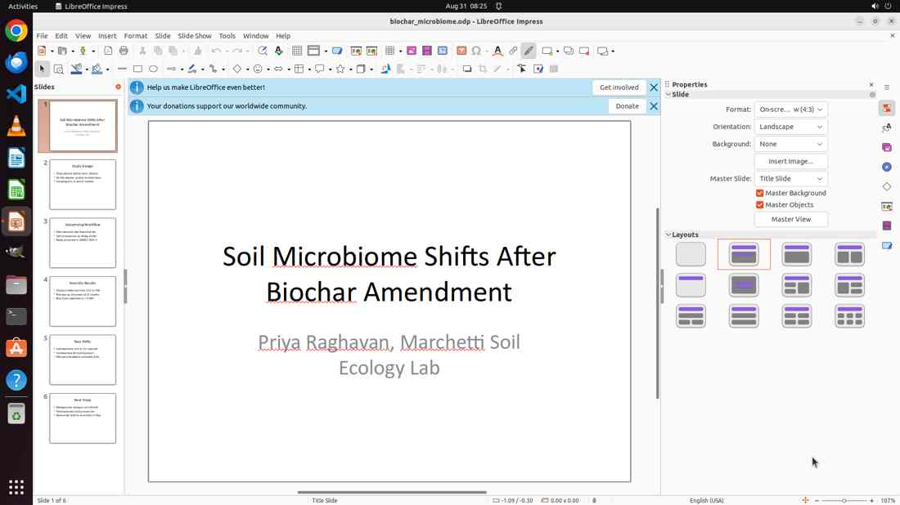
step 2 00:25:35
THINKINGThe super key didn't open an activities overview visibly. Let me use a terminal application to find the lab folder and checklist file. There's a terminal icon in the left dock. I'll click it to open a terminal and explore the filesystem.
ACTIONLet me open a terminal to locate the lab folder and the checklist file.
EXECUTED (pyautogui in VM)pyautogui.click(449, 299)
step 4 00:25:55
THINKINGI'll run a find command to locate the lab folder, checklist, and the deck. Let me search for the .odp file and any folders/files related to "lab" or "checklist".
EXECUTED (pyautogui in VM)pyautogui.press("return")
step 6 00:26:13
THINKINGI found the key files:
- /home/user/labwork/ (the lab folder)
- /home/user/labwork/biochar_microbiome.odp (the deck)
- /home/user/labwork/submission_checklist.txt (the checklist)
Let me read the checklist text file to understand what needs to be verified.
ACTIONFound the lab folder `/home/user/labwork/` containing the deck and `submission_checklist.txt`. Let me read the checklist.
EXECUTED (pyautogui in VM)pyautogui.typewrite("cat /home/user/labwork/submission_checklist.txt")
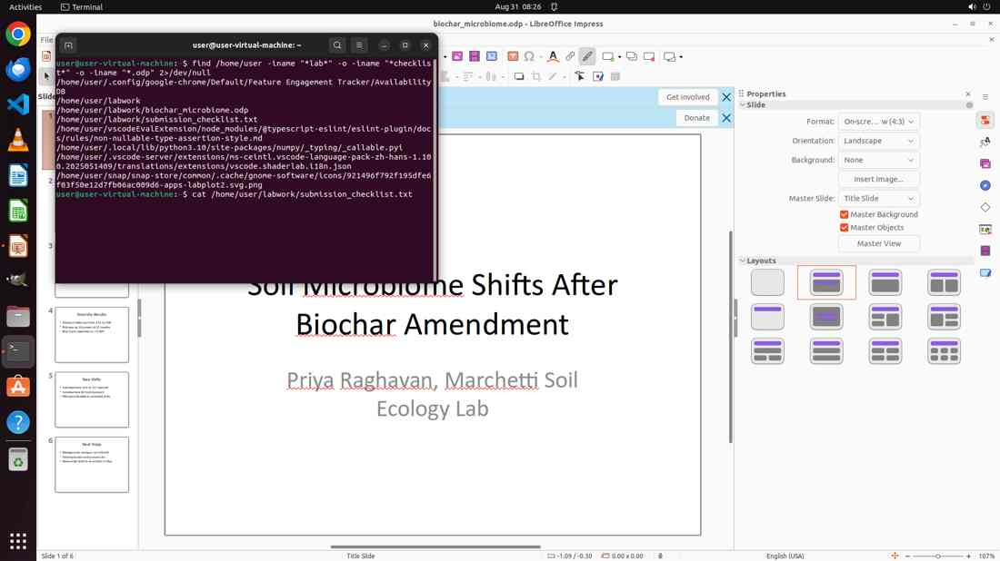
step 7 00:26:21
THINKINGThe command typed but the cat output may have scrolled. Let me press Return to execute it. Actually I already pressed Return implicitly by typing the newline. Wait, the output hasn't shown. Let me press Return.
EXECUTED (pyautogui in VM)pyautogui.press("return")
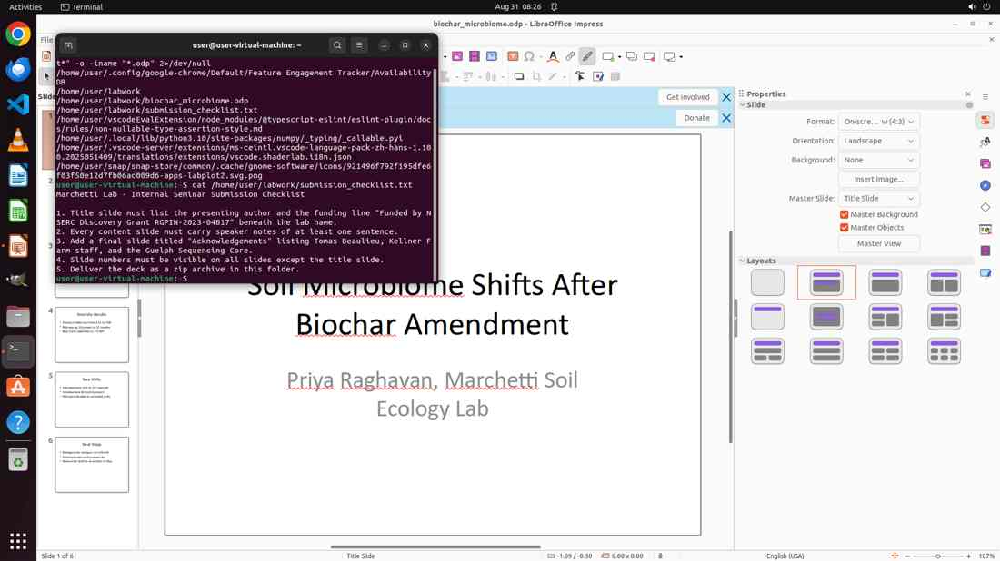
step 8 00:26:37
THINKINGNow I can read the checklist clearly:
Marchetti Lab - Internal Seminar Submission Checklist
1. Title slide must list the presenting author and the funding line "Funded by NSERC Discovery Grant RGPIN-2023-04817" beneath the lab name.
2. Every content slide must carry speaker notes of at least one sentence.
3. Add a final slide titled "Acknowledgements" listing Tomas Beaulieu, Kellner Farm staff, and the Guelph Sequencing Core.
4. Slide numbers must be visible on all slides except the title slide.
5. Deliver the deck as a zip archive in this folder.
Now I need to check the current deck against each item. Let me inspect the deck content. The .odp is a zip. Let me extract text to understand current state. I can examine the content.xml. Let me copy to a temp and unzip to inspect the current state — this helps me know what's missing before editing in Impress.
Let me dump the text of the deck. I'll use a Python-free approach: unzip -p on content.xml. But it's easier to just examine each slide in Impress. However, to be thorough about speaker notes and slide numbers, examining the XML is more reliable.
Let me extract the deck's text content.
ACTIONI now have the checklist. Let me record the requirements:
1. Title slide must list the presenting author and funding line "Funded by NSERC Discovery Grant RGPIN-2023-04817" beneath the lab name.
2. Every content slide must carry speaker notes of at least one sentence.
3. Add a final slide titled "Acknowledgements" listing Tomas Beaulieu, Kellner Farm staff, and the Guelph Sequencing Core.
4. Slide numbers must be visible on all slides except the title slide.
5. Deliver the deck as a zip archive in this folder.
Let me inspect the deck's current content by extracting its XML to understand what's present.
TOOL CALL<tool_call>
<function=computer_use>
<parameter=action>
type
</parameter>
<parameter=text>
cd /tmp && rm -rf deck && mkdir deck && cd deck && unzip -q /home/user/labwork/biochar_microbiome.odp && ls
</parameter>
</function>
</tool_call>
EXECUTED (pyautogui in VM)pyautogui.press("return")
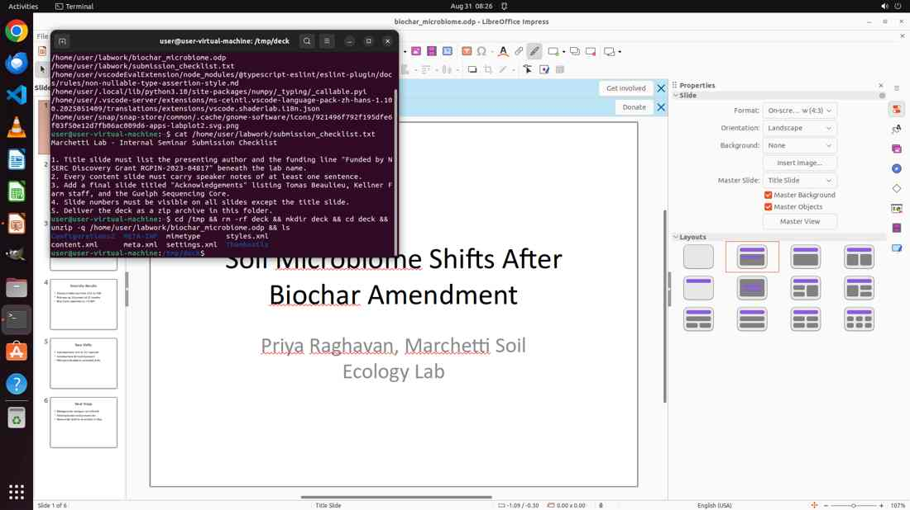
step 10 00:27:01
THINKINGThe deck is unzipped. There's content.xml, styles.xml, settings.xml, meta.xml, Thumbnails, mimetype, META-INF, Configurations2. No presentation.xml separately - it's all in content.xml.
Rather than editing the XML directly (risky and the task implies using the GUI app - Impress is open), I should do the editing in Impress. But first, let me understand the current state to know exactly what's missing. Let me extract the visible text and speaker notes.
Let me use a grep/python approach to pull text. Let me use python3 to parse content.xml and print per-slide text and notes. Actually simpler: I'll dump readable text. Let me check the speaker notes presence and slide text.
Let me use a quick python one-liner to show slide count, slide texts, and notes.
ACTIONLet me extract the slide text and speaker notes to assess the current state.
TOOL CALL<tool_call>
<function=computer_use>
<parameter=action>
type
</parameter>
<parameter=text>
python3 -c "
import re
x=open('content.xml').read()
slides=re.findall(r'<draw:page[^>]*>(.*?)</draw:page>', x, re.S)
for i,s in enumerate(slides,1):
txt=' '.join(re.findall(r'<text:p[^>]*>(.*?)</text:p>', s, re.S))
txt=re.sub('<[^>]+>','',txt)
print('SLIDE',i,'|',txt.strip()[:200])
"
</parameter>
</function>
</tool_call>
EXECUTED (pyautogui in VM)pyautogui.typewrite("python3 -c \"\nimport re\nx=open('content.xml').read()\nslides=re.findall(r'<draw:page[^>]*>(.*?)</draw:page>', x, re.S)\nfor i,s in enumerate(slides,1):\n txt=' '.join(re.findall(r'<text:p[^>]*>(.*?)</text:p>', s, re.S))\n txt=re.sub('<[^>]+>','',txt)\n print('SLIDE',i,'|',txt.strip()[:200])\n\"")
step 11 00:27:13
THINKINGThe multi-line command with the closing quote is present but I typed it with a trailing newline; the prompt shows the last line is `"` which closes the python string. I need to press Return to execute. Let me press Return.
EXECUTED (pyautogui in VM)pyautogui.press("return")
step 12 00:27:36
THINKINGNow I understand the slide contents:
SLIDE 1 | Soil Microbiome Shifts After Biochar Amendment | Priya Raghavan, Marchetti Soil Ecology Lab
SLIDE 2 | Study Design | Three plots at Kellner Farm, Ontario; 40 t/ha biochar, control, and half dose. Sampling at 0, 6, and 12 months
SLIDE 3 | Sequencing Workflow | DNA extracted with PowerSoil kits; 16S V4 amplicons on MiSeq; 2x250 Reads processed in QIIME2 2024.5
SLIDE 4 | Diversity Results | Shannon index rose from 4.12 to 4.68; Richness up 19 percent at 12 months; Bray-Curtis separation p = 0.003
SLIDE 5 | Taxa Shifts | Actinobacteria fell to 21.7 percent; Acidobacteria fell to 14.2; Nitrospira doubled in amended plots
SLIDE 6 | Next Steps | Metagenomic shotgun run in March; Field replication at Dunmore site; Manuscript draft to co-authors in May
Now I need to check speaker notes per slide. Let me check notes. In ODP, notes are in <presentation:notes> within each draw:page. Let me check which slides have notes.
Let me now examine the notes.
ACTIONNow I have the slide contents. Let me check the speaker notes for each slide.
TOOL CALL<tool_call>
<function=computer_use>
<parameter=action>
type
</parameter>
<parameter=text>
python3 -c "
import re
x=open('content.xml').read()
slides=re.findall(r'<draw:page[^>]*>(.*?)</draw:page>', x, re.S)
for i,s in enumerate(slides,1):
m=re.search(r'<presentation:notes>(.*?)</presentation:notes>', s, re.S)
note=''
if m:
note=' '.join(re.findall(r'<text:p[^>]*>(.*?)</text:p>', m.group(1), re.S))
note=re.sub('<[^>]+>','',note)
print('SLIDE',i,'NOTE =>',repr(note.strip()))
"
</parameter>
</function>
</tool_call>
EXECUTED (pyautogui in VM)pyautogui.typewrite("python3 -c \"\nimport re\nx=open('content.xml').read()\nslides=re.findall(r'<draw:page[^>]*>(.*?)</draw:page>', x, re.S)\nfor i,s in enumerate(slides,1):\n m=re.search(r'<presentation:notes>(.*?)</presentation:notes>', s, re.S)\n note=''\n if m:\n note=' '.join(re.findall(r'<text:p[^>]*>(.*?)</text:p>', m.group(1), re.S))\n note=re.sub('<[^>]+>','',note)\n print('SLIDE',i,'NOTE =>',repr(note.strip()))\n\"")
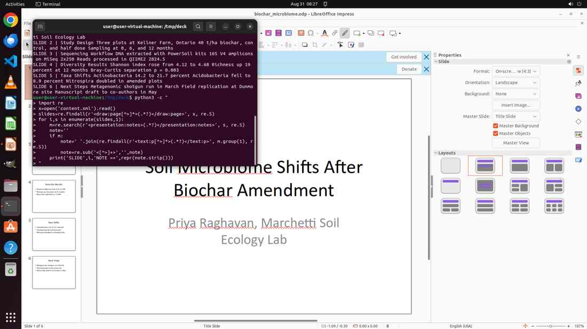
step 13 00:27:43
THINKINGThe command is typed. I need to press Return to run it.
EXECUTED (pyautogui in VM)pyautogui.press("return")
step 14 00:28:02
THINKINGAll slides currently have empty speaker notes (SLIDE 1 through 6 all NOTE => '').
Now let me assess the checklist against current state:
1. Title slide must list the presenting author AND the funding line "Funded by NSERC Discovery Grant RGPIN-2023-04817" beneath the lab name.
- Current slide 1: "Soil Microbiome Shifts After Biochar Amendment" / "Priya Raghavan, Marchetti Soil Ecology Lab". Author present. Funding line MISSING. Need to add "Funded by NSERC Discovery Grant RGPIN-2023-04817" beneath the lab name.
2. Every content slide must carry speaker notes of at least one sentence.
- All slides have empty notes. Need to add at least one sentence of notes to every content slide (slides 2-6, and possibly the new Acknowledgements slide which is content). The title slide (slide 1) — "content slide" typically excludes title. I'll add notes to content slides 2-6 and the new Ack slide.
3. Add a final slide titled "Acknowledgements" listing Tomas Beaulieu, Kellner Farm staff, and the Guelph Sequencing Core.
- Missing. Need to add.
4. Slide numbers must be visible on all slides except the title slide.
- Need to check current state. Slide numbers are a footer field. Need to verify. Let me check settings/master for a page-number field. Likely not present. I need to enable slide numbers on all slides except title.
5. Deliver the deck as a zip archive in this folder.
- After fixing, zip the .odp into /home/user/labwork/.
Now the task says "against the soil microbiome deck that's open" — implying I should edit the open deck in Impress (GUI). The system notes say to use the GUI directly and avoid macros. So I'll do the edits in Impress.
The cleanest approach for edits:
- Use View > Notes or the Notes view to add speaker notes per slide.
- Insert slide numbers via Insert > Header and Footer.
- Add the funding line to the title slide subtitle.
- Add a new final slide "Acknowledgements".
- Then save (Ctrl+S, keep ODP format).
- Then zip the .odp into the folder.
Let me first check whether slide numbers (page number field) currently exist. Let me grep content.xml for the number field.
ACTIONAll slides currently have empty speaker notes. Let me verify whether slide numbers (page-number fields) currently exist anywhere in the deck.
EXECUTED (pyautogui in VM)pyautogui.press("return")
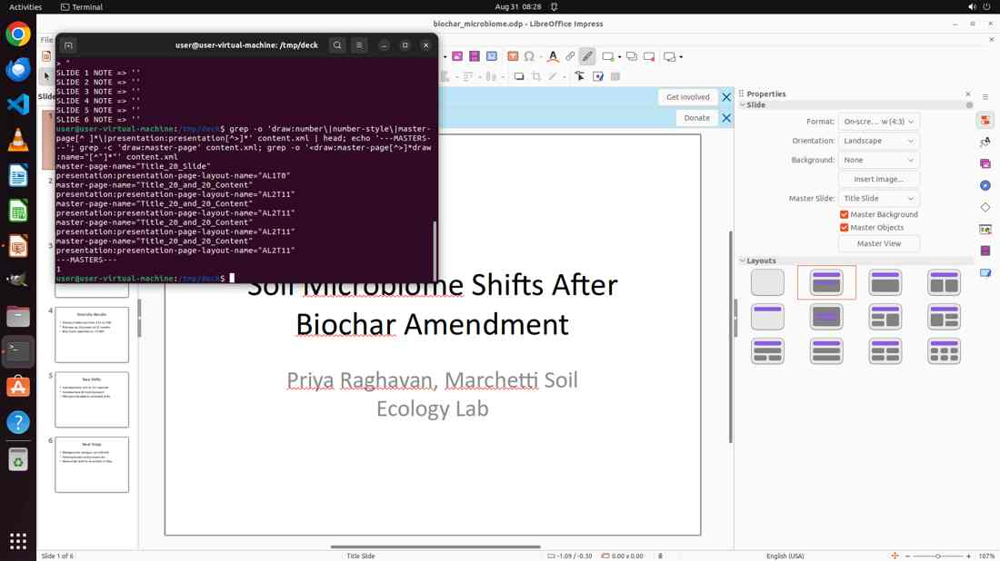
step 16 00:28:47
THINKINGResults:
- No 'draw:number' or 'number-style' found (the grep matched only master-page and presentation:presentation lines). So slide numbers (page number fields) do NOT exist.
- There's 1 master-page: "Title_20_Slide". All slides reference "Title_20_Slide" as their master page (slide 1) or "Title_20_and_20_Content" as layout name. Wait, master-page-name values: slide 1 = "Title_20_Slide", slides 2-6 = "Title_20_and_20_Content". But there's only 1 draw:master-page defined? The grep -c returned 1. Hmm, that's odd - it says 1 master page but references two names. Actually the "Title_20_and_20_Content" is a presentation-page-layout-name (AL...), not master-page-name. Let me re-read:
Lines:
master-page-name="Title_20_Slide"
presentation:presentation-page-layout-name="AL1T0"
master-page-name="Title_20_and_20_Content" <- wait this says master-page-name
presentation:presentation-page-layout-name="AL2T11"
... repeated
Hmm the grep -o picked up both patterns. Actually the alternating lines show: master-page-name then page-layout-name. For slide 1: master-page="Title_20_Slide", layout="AL1T0". For slides 2-6: master-page="Title_20_and_20_Content", layout="AL2T11".
But grep -c 'draw:master-page' returned 1, meaning only one <draw:master-page> element defined (only the Title Slide master). So "Title_20_and_20_Content" might be a layout name not a master. This is getting complex.
The key point: slide numbers are not currently present. I need to enable them via Insert > Header and Footer in Impress, which adds a page-number field to the master/layouts. Then I must ensure they appear on all slides EXCEPT the title slide.
The Header/Footer dialog in Impress has a "Slide number" checkbox and a "Do not show on first slide" checkbox. That's perfect for requirement 4! I can check "Slide number" and "Do not show on first slide", apply to all. This will show numbers on slides 2-7 and not on slide 1 (title).
But wait — does the Header/Footer apply to master? In Impress, Insert > Header and Footer has a Slide tab with "Date and time", "Footer", "Slide number" checkboxes and "Do not show on first slide". Apply to All adds the fields to the master layout. This should work.
Now the overall plan of edits in Impress GUI:
A. Title slide: add funding line beneath lab name. Edit the subtitle text box "Priya Raghavan, Marchetti Soil Ecology Lab" to add a new line "Funded by NSERC Discovery Grant RGPIN-2023-04817".
B. Speaker notes: add at least one sentence to each content slide (slides 2-6, and new slide 7). Title slide not required (it's not a content slide). I'll add to 2-7.
C. New final slide "Acknowledgements" with the three names.
D. Insert > Header and Footer: enable Slide number, Do not show on first slide, Apply to All.
E. Save as ODP (keep format).
F. Zip the .odp into /home/user/labwork/.
Order consideration: Adding the new slide before or after enabling header/footer doesn't matter much since Apply to All affects master. Let me do edits then save.
Let me start working in Impress. First, close/move the terminal so I can see Impress. Actually I'll keep terminal; I need it later for zipping. Let me bring Impress to front by clicking on it. But the terminal overlaps the slide area. Let me minimize the terminal.
Let me minimize the terminal window first.
ACTIONI've fully assessed the deck. Current gaps vs. the checklist:
- **Item 1**: Title slide has the author but is missing the funding line.
- **Item 2**: All slides have empty speaker notes.
- **Item 3**: No "Acknowledgements" slide exists.
- **Item 4**: No slide-number field exists anywhere.
- **Item 5**: No zip archive yet.
I'll now make these edits in Impress. Let me minimize the terminal and work on the title slide first.
EXECUTED (pyautogui in VM)pyautogui.click(734, 83)
step 17 00:29:03
THINKINGThe terminal is minimized and Impress is in focus. I'll first close the two notification bars (Get involved / Donate) to reduce clutter. Let me close them by clicking their X buttons. Then edit the title slide.
Actually, let me just proceed. First, edit the title slide subtitle to add the funding line. The subtitle text box contains "Priya Raghavan, Marchetti Soil Ecology Lab". I'll triple-click to enter it, position cursor at the end, and add a new line.
Let me close the notification bars first to avoid accidental clicks. Click the X at [929,124] and [929,151].
ACTIONLet me close the notification banners, then edit the title slide's subtitle to add the funding line.
EXECUTED (pyautogui in VM)pyautogui.click(1391, 184)
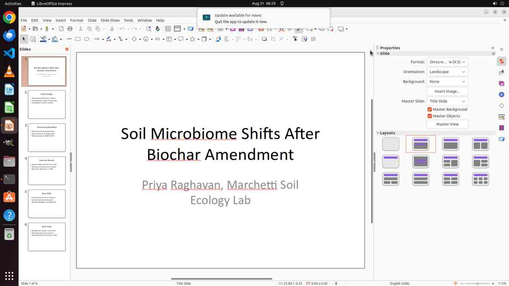
step 19 00:29:26
THINKINGBoth banners closed. A system notification "Update available for novnc" appeared top-right — I'll ignore it; it's not part of the task and not a dialog requiring interaction.
Now I'll edit the subtitle. I'll double-click into the subtitle text box ("Priya Raghavan, Marchetti Soil Ecology Lab") to enter edit mode, then place cursor at end of "Ecology Lab" and add a new line with the funding text.
To reliably position at end: double-click into the text box, then click at end of "Lab" line, or use Ctrl+End to go to end of text. Let me double-click on the subtitle, then press Ctrl+End to move to the very end, then Enter and type the funding line.
ACTIONBoth banners are closed. Now I'll edit the title slide subtitle to add the funding line. I'll double-click into the subtitle text box, move to the end, and add a new line.
EXECUTED (pyautogui in VM)pyautogui.tripleClick(830, 697)
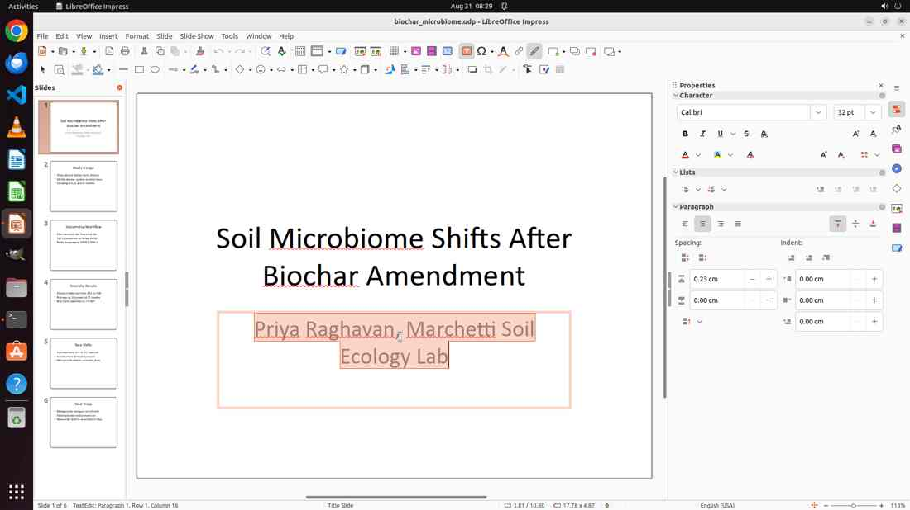
step 20 00:29:36
THINKINGI'm now in text edit mode in the subtitle box, and the first line "Priya Raghavan, Marchetti Soil" is selected (triple-click selects a paragraph). I want to place the cursor at the very end of the text ("...Ecology Lab") and add a new line. Let me press Ctrl+End to go to the end, then Enter and type the funding line.
ACTIONI'm in the subtitle text box. Let me move to the end of the text and add the funding line on a new line.
EXECUTED (pyautogui in VM)pyautogui.hotkey("ctrl", "end")
step 21.1 00:29:50
THINKINGStatus bar shows "Row 2, Column 12" — cursor is at the end of "Ecology Lab" (Row 2). Now I'll press Enter and type the funding line. The checklist requires the exact line: "Funded by NSERC Discovery Grant RGPIN-2023-04817". Let me add a new paragraph and type it.
ACTIONThe cursor is at the end of "Ecology Lab". I'll add a new line with the exact funding line from the checklist.
TOOL CALL<tool_call>
<function=computer_use>
<parameter=action>
key
</parameter>
<parameter=keys>
["return"]
</parameter>
</function>
</tool_call>
<tool_call>
<function=computer_use>
<parameter=action>
type
</parameter>
<parameter=text>
Funded by NSERC Discovery Grant RGPIN-2023-04817
</parameter>
</function>
</tool_call>
EXECUTED (pyautogui in VM)pyautogui.press("return")
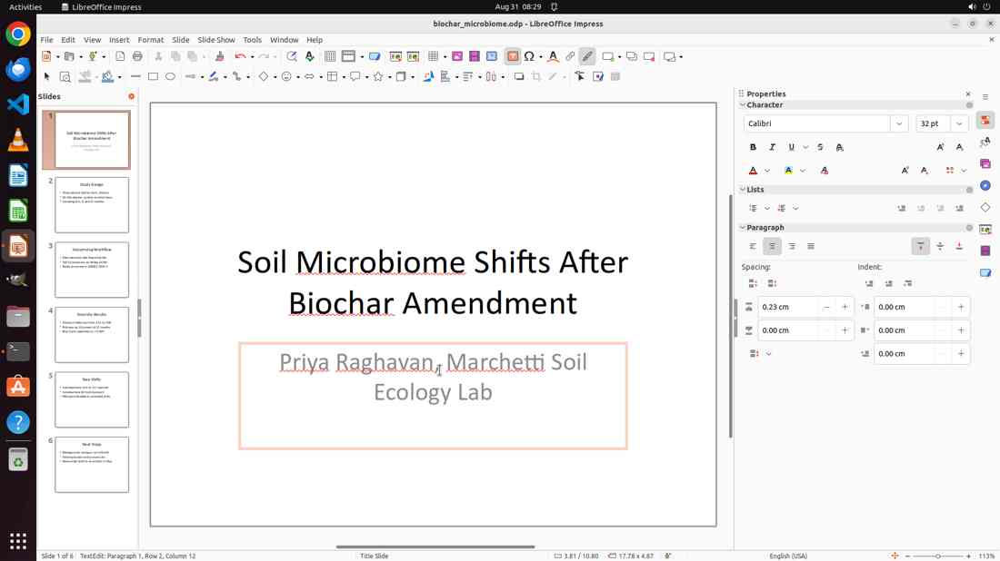
step 21.2 00:29:53
same model call as the previous action
EXECUTED (pyautogui in VM)pyautogui.typewrite("Funded by NSERC Discovery Grant RGPIN-2023-04817")
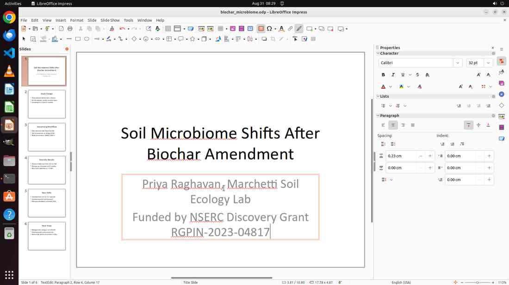
step 22 00:30:04
THINKINGThe funding line is now added beneath the lab name: "Funded by NSERC Discovery Grant RGPIN-2023-04817". Item 1 is satisfied (author present + funding line beneath lab name).
Now I need to handle:
- Item 3: Add final slide "Acknowledgements" with the three names.
- Item 2: Speaker notes on every content slide (slides 2-6 and new slide 7).
- Item 4: Slide numbers on all except title.
Let me click outside to deselect, then add the new slide. I'll first do the Acknowledgements slide. Let me click empty area to deselect, then in the slide panel, right-click on slide 6 to add a slide after it, OR use Slide menu > New Slide.
Let me click empty canvas first.
ACTIONItem 1 is complete — the funding line is now beneath the lab name. Now let me click outside to deselect, then add the "Acknowledgements" slide at the end.
EXECUTED (pyautogui in VM)pyautogui.click(830, 989)
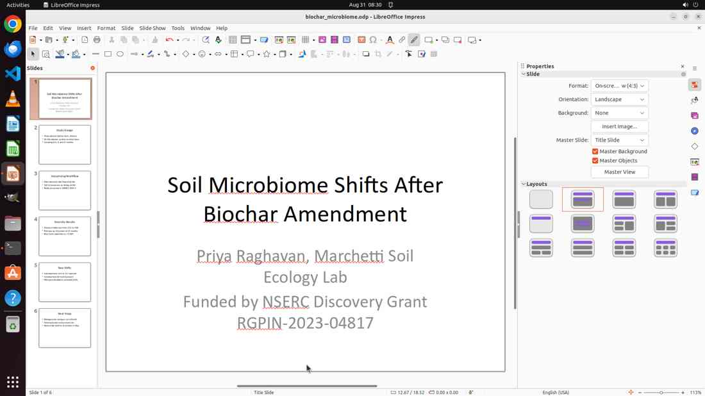
step 23 00:30:17
THINKINGDeselected. Title slide now shows the funding line. Now I'll add the Acknowledgements slide. Let me select slide 6 in the panel, then use Slide menu > New Slide, or right-click slide 6 and choose "New Slide". I'll click slide 6 in the panel first, then right-click to get the context menu.
ACTIONNow let me add the new slide after slide 6. I'll select slide 6 in the panel and right-click to insert a new slide.
EXECUTED (pyautogui in VM)pyautogui.click(174, 892)
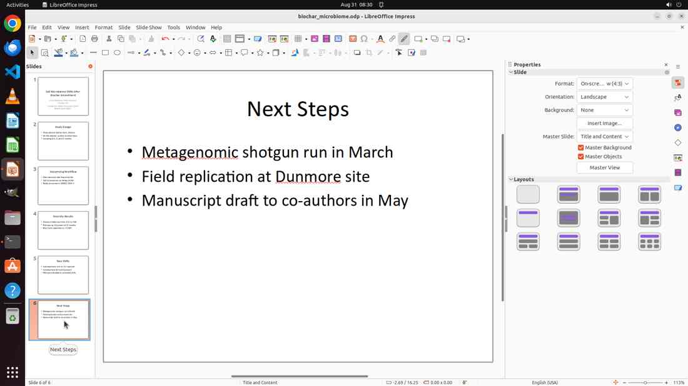
step 24 00:30:30
THINKINGSlide 6 "Next Steps" is selected. Now I'll add a new slide after it. I'll right-click on slide 6 in the panel to get the context menu with "New Slide".
ACTIONSlide 6 is selected. Let me right-click to open the context menu and insert a new slide.
EXECUTED (pyautogui in VM)pyautogui.click(238, 670)
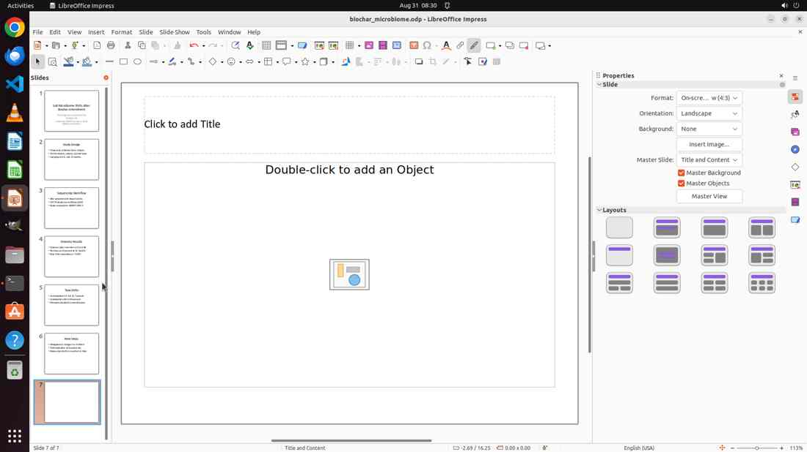
step 26 00:30:52
THINKINGSlide 7 created with "Title and Content" layout. It has a title placeholder "Click to add Title" and a content area "Double-click to add an Object".
For the Acknowledgements slide, I want a title "Acknowledgements" and a content listing the three names. I'll use the content placeholder as a text list. The layout's content box currently shows "Double-click to add an Object" which suggests it's a content placeholder that can hold text or object. Let me use the title first, then use the content area.
Actually, to keep it clean and reliable, I'll set the title to "Acknowledgements" and put the three names as bulleted text. The content placeholder: I'll double-click it to add text. But it says "Double-click to add an Object" which is the placeholder for inserting an object. Let me instead check: the layout "Title and Content" — the content placeholder accepts text too. Let me click into the title first.
Let me click the title placeholder and type "Acknowledgements".
ACTIONSlide 7 is created. Let me add the title "Acknowledgements" and the three names. First I'll click the title placeholder and type the title.
EXECUTED (pyautogui in VM)pyautogui.click(434, 294)
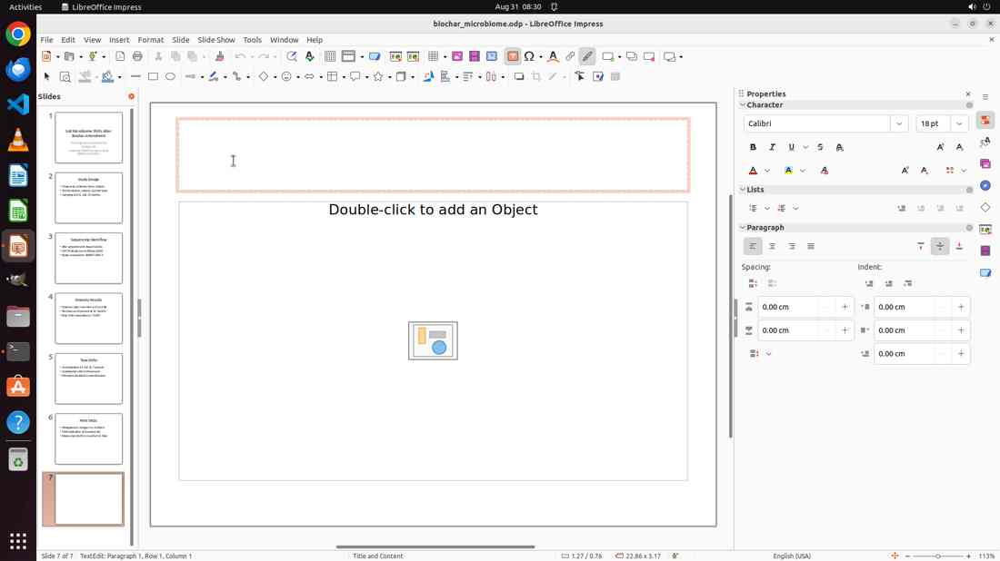
step 27 00:31:02
THINKINGI'm in the title text box (status bar: TextEdit Paragraph 1, Row 1, Column 1). Let me type "Acknowledgements". Then I'll add the content. The content area "Double-click to add an Object" is a placeholder for an object; but the Title and Content layout usually has a content placeholder that accepts text. However here it shows an object icon, which is the "Insert Object" prompt. Let me type the title first.
EXECUTED (pyautogui in VM)pyautogui.typewrite("Acknowledgements")
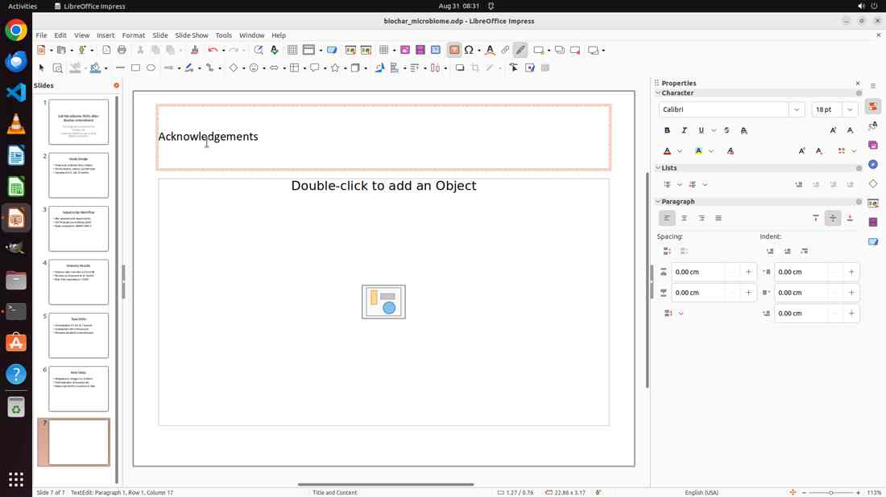
step 28.1 00:31:15
THINKINGTitle "Acknowledgements" added. Now I need to add the three names in the content area. The content area shows "Double-click to add an Object" with an object icon in the middle. This is a content placeholder. When I double-click it, it may insert an OLE object prompt. Instead, the safer approach: this "Title and Content" placeholder in Impress actually can take text. But the "Double-click to add an Object" text suggests this is specifically an object placeholder, not a text bullet placeholder.
Actually looking at the layout, the content area has both a "Double-click to add an Object" prompt at top and an object icon in the middle. This is the standard "Title, Content" layout where the content placeholder accepts either text or an object. If I just click into it (single click selects the frame, then I can type), it should become text.
Let me try: click outside to deselect title, then double-click the content area to enter text editing. Actually the prompt literally says "Double-click to add an Object" — double-clicking might trigger object insertion dialog.
A more reliable approach: I'll add the names as a separate text box. But that could be less clean. However, the checklist only requires the slide to list the three names. A text box works fine and is reliable.
Actually, let me reconsider. In Impress, the "Title, Content" layout's content placeholder is a text placeholder that, when empty, shows "Click to add Text" typically. Here it shows "Double-click to add an Object" — that's the placeholder for the object variant. This particular deck's master may define the content placeholder as an object placeholder.
Given uncertainty, the safest is to create a text box with the three names. Let me click outside first, then use Insert > Text Box and draw a box, then type the three names.
Actually, let me first just try clicking into the content placeholder once to select it, then click again / type. Let me click on the content area (not on the object icon) — say at the top where the prompt text is.
Let me first press Escape to exit the title edit, then click the content area.
ACTIONTitle is set. Now I'll add the three names. Let me click into the content placeholder area to see if it accepts text.
EXECUTED (pyautogui in VM)pyautogui.doubleClick(749, 523)
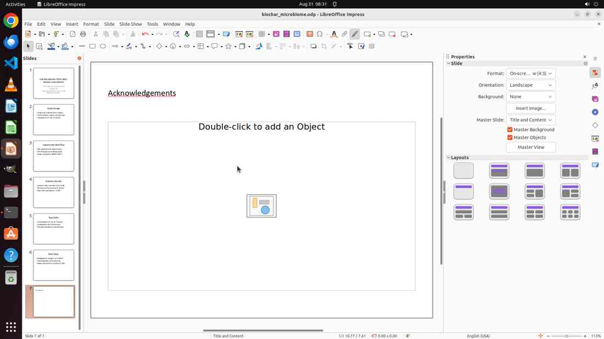
step 29 00:31:30
THINKINGThe double-click on the content area did not enter text editing (status bar no longer shows TextEdit; Properties shows "Slide"). It seems the content placeholder is an object placeholder that requires double-clicking right on it to insert an object, but I clicked in an empty region. This placeholder is not a simple text placeholder.
To be reliable, I'll create a dedicated text box for the three names. Let me use Insert > Text Box. I'll select the text box tool from the toolbar or Insert menu. There's a text box tool in the toolbar (the "Insert Text Box" icon). Let me use the Insert menu to be safe.
Let me click Insert menu.
ACTIONThe content placeholder is an object placeholder, not a text one. I'll instead insert a text box for the three names. Let me open the Insert menu.
EXECUTED (pyautogui in VM)pyautogui.click(226, 75)
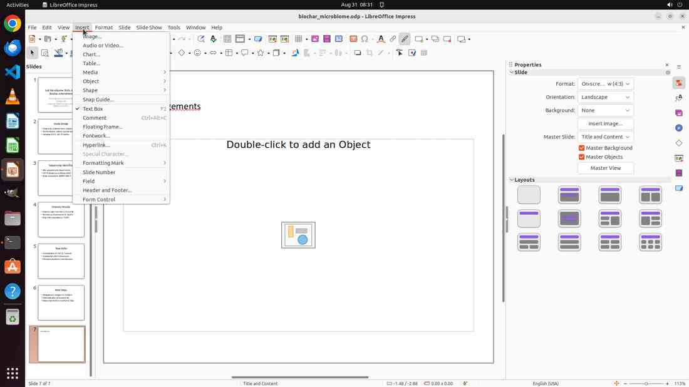
step 30 00:31:38
THINKINGI see "Text Box" in the Insert menu. Let me click it, then draw a text box in the content area and type the three names. I'll also note "Header and Footer..." is here for later (item 4).
Let me click Text Box.
ACTIONI'll select "Text Box" and draw it in the content area.
EXECUTED (pyautogui in VM)pyautogui.click(259, 302)
step 31.1 00:31:59
THINKINGThe text box tool is now active (cursor should be a crosshair). I'll drag to draw a text box in the content area, roughly from (260,300) to (830,420), then type the three names as separate lines.
ACTIONThe text box tool is active. I'll draw a text box in the content area and type the three names.
EXECUTED (pyautogui in VM)pyautogui.moveTo(388, 449)
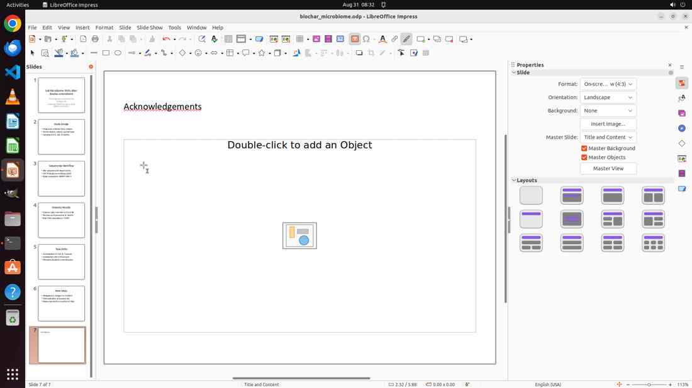
step 31.2 00:32:03
same model call as the previous action
EXECUTED (pyautogui in VM)pyautogui.dragTo(1243, 643, duration=0.5)
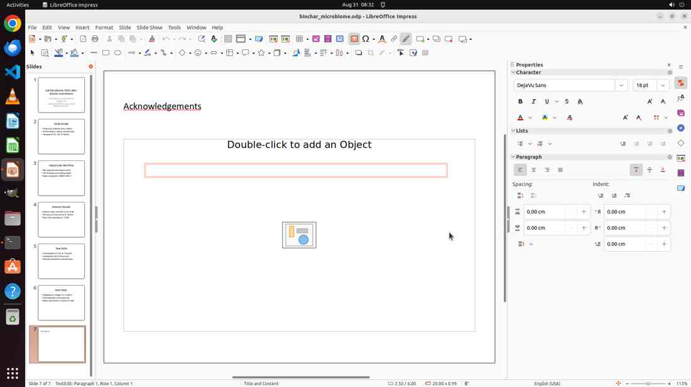
step 32 00:32:15
THINKINGA text box is now in edit mode (status: TextEdit Paragraph 1, Row 1, Column 1). It's a bit thin but that's fine; the text box will grow. Let me type the three names, each on its own line.
ACTIONThe text box is ready. I'll type the three acknowledgements on separate lines.
TOOL CALL<tool_call>
<function=computer_use>
<parameter=action>
type
</parameter>
<parameter=text>
Tomas Beaulieu
Kellner Farm staff
Guelph Sequencing Core
</parameter>
</function>
</tool_call>
EXECUTED (pyautogui in VM)pyautogui.typewrite("Tomas Beaulieu\nKellner Farm staff\nGuelph Sequencing Core")
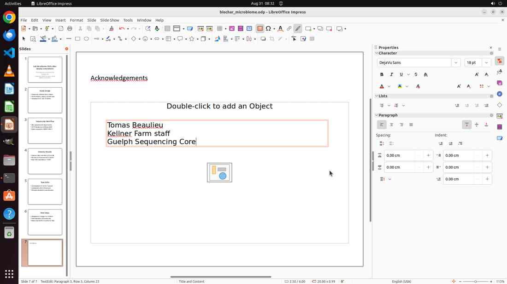
step 33.1 00:32:27
THINKINGThe three names are now on the Acknowledgements slide:
- Tomas Beaulieu
- Kellner Farm staff
- Guelph Sequencing Core
Item 3 is done. Now let me click outside to deselect. Then handle item 2 (speaker notes) and item 4 (slide numbers).
Let me press Escape twice to deselect. Then set up slide numbers via Insert > Header and Footer.
ACTIONThe Acknowledgements slide is complete (item 3). Now let me set up slide numbers via Insert > Header and Footer. First I'll click outside to deselect.
EXECUTED (pyautogui in VM)pyautogui.click(297, 527)
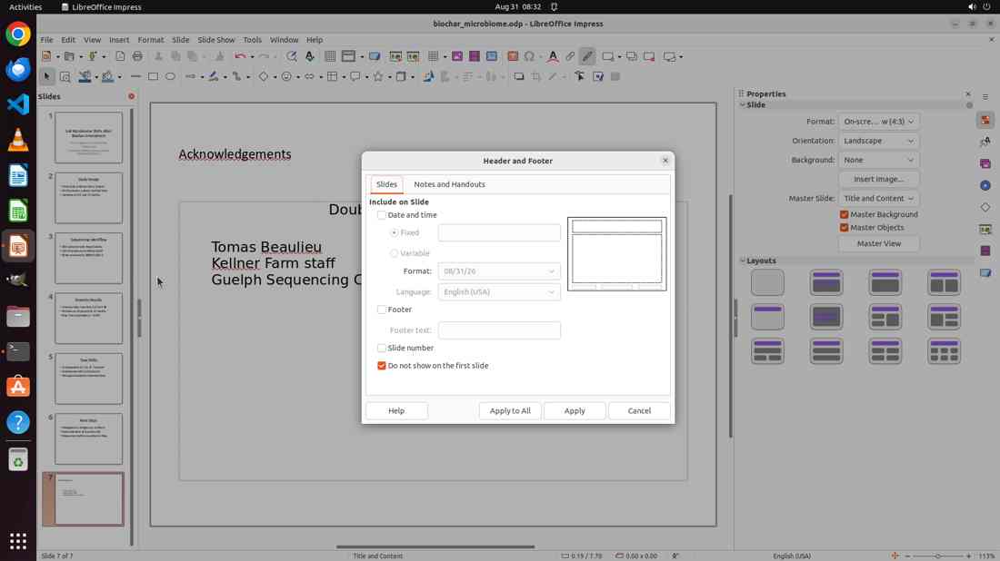
step 35 00:32:53
THINKINGThe Header and Footer dialog is open on the Slides tab. I see:
- Date and time (unchecked)
- Footer (unchecked)
- Slide number (unchecked) — I need to check this
- "Do not show on the first slide" (checked) — already checked, which is exactly what I want for item 4.
Let me check the "Slide number" box, then click "Apply to All". The "Do not show on the first slide" is already checked, perfect.
ACTIONThe dialog shows "Do not show on the first slide" is already checked. I'll enable "Slide number" and apply to all slides.
EXECUTED (pyautogui in VM)pyautogui.click(732, 665)
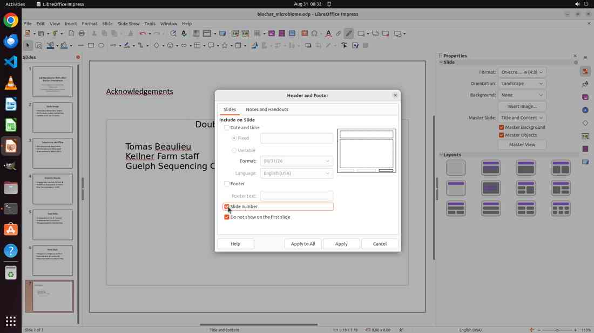
step 36 00:33:03
THINKING"Slide number" is now checked, and "Do not show on the first slide" remains checked. The preview shows a number in the bottom-right of the slide. Now I'll click "Apply to All" to apply to all slides.
ACTIONBoth "Slide number" and "Do not show on the first slide" are checked. Let me click "Apply to All".
EXECUTED (pyautogui in VM)pyautogui.click(978, 789)
step 37 00:33:16
THINKINGSlide 7 now shows "7" in the bottom-right corner. Slide numbers are applied to all slides except the first. Item 4 done.
Now item 2: speaker notes on every content slide (slides 2-6, and the new slide 7). The title slide (slide 1) is not a content slide, so it's not strictly required, but I'll focus on content slides 2-7.
The best way to add speaker notes is to use View > Notes view, or the Notes panel at the bottom. In Impress, there's a "View > Notes" which shows the current slide with a notes area below. I'll switch to Notes view and add a sentence to each content slide.
Actually, a more efficient approach: use the Notes tab/panel. Let me use View menu > Notes. But in Notes view I can only see one slide at a time. I'll add notes per slide by selecting each slide and typing in the notes area.
Let me switch to Notes view via View menu.
Actually, there might be a notes panel at the bottom of the Normal view. Currently I don't see it. Let me use View > Notes to be safe.
Let me open View menu.
ACTIONSlide numbers now appear (slide 7 shows "7"), and they'll be hidden on the title slide. Item 4 is complete. Now I'll add speaker notes to each content slide. Let me switch to Notes view via the View menu.
EXECUTED (pyautogui in VM)pyautogui.click(201, 150)
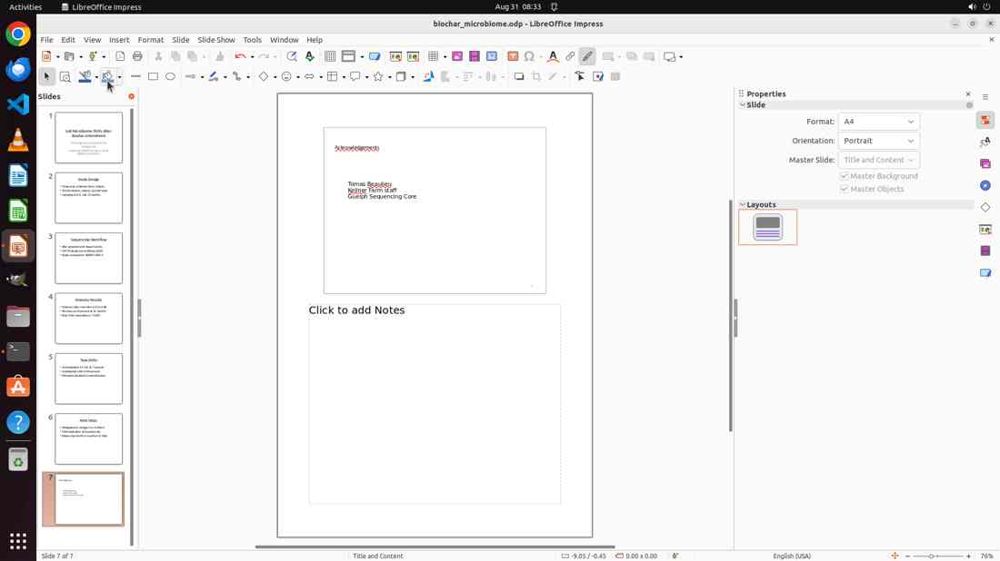
step 39 00:33:39
THINKINGNow I'm in Notes view showing slide 7 (Acknowledgements) with a "Click to add Notes" area below. I'll add notes to each content slide. Let me start with slide 7, then go to each of slides 2-6.
The checklist says "Every content slide must carry speaker notes of at least one sentence." Content slides are slides 2-7 (excluding the title slide 1). I'll add a meaningful one-sentence note to each.
Let me click the notes area for slide 7 and type a note.
ACTIONI'm in Notes view for slide 7. Let me add a speaker note here, then move to the other content slides. I'll click the notes area and type.
EXECUTED (pyautogui in VM)pyautogui.click(830, 674)
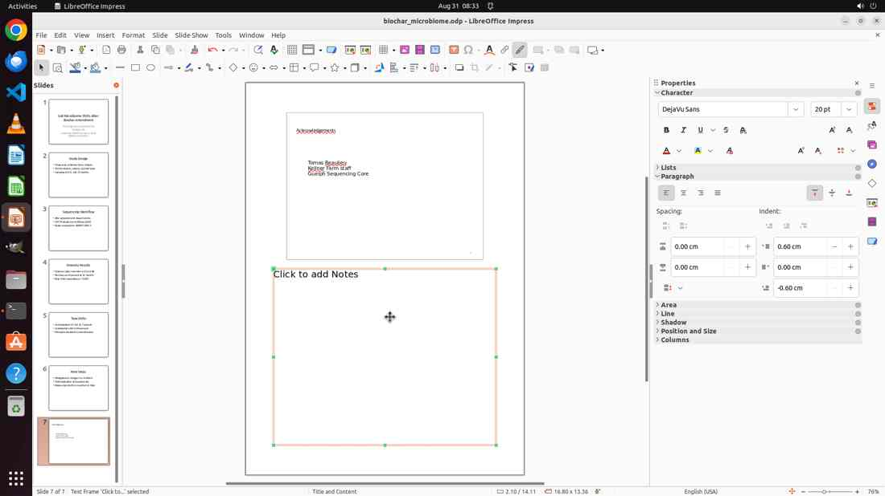
step 40 00:33:54
THINKINGThe notes text frame is selected (status: "Text Frame 'Click to...' selected"). I need to enter text editing mode — I'll double-click to enter edit mode, then type. Actually a single click selected the frame. Let me double-click to enter editing, then type the note.
Let me double-click on the notes area to enter text edit mode and type the note for slide 7.
ACTIONThe notes frame is selected. Let me double-click to enter edit mode and type a note for slide 7.
EXECUTED (pyautogui in VM)pyautogui.doubleClick(830, 674)
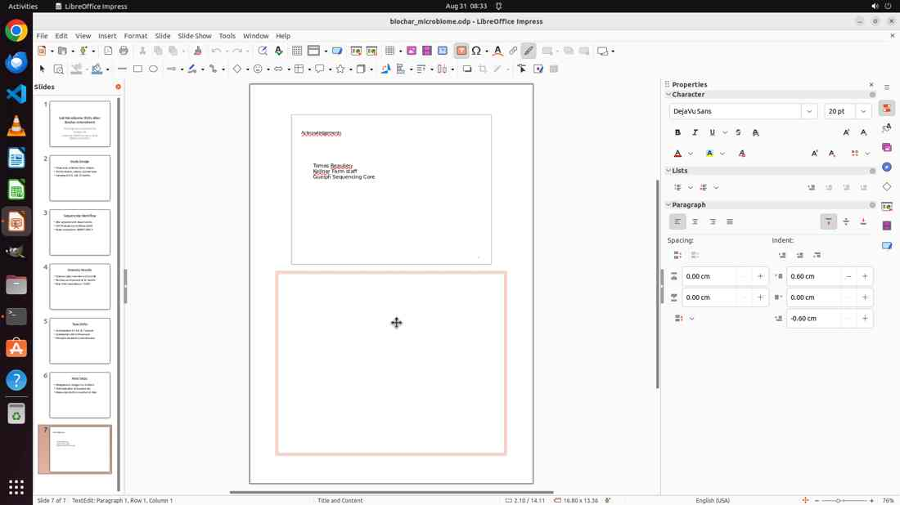
step 41 00:34:23
THINKINGNow in text edit mode in the notes area (status: TextEdit Paragraph 1, Row 1, Column 1). Let me type a one-sentence note for slide 7. Then I'll move to slide 6 by clicking its thumbnail, and repeat.
I'll type the note for slide 7.
ACTIONI'm now editing the notes for slide 7. Let me type a note.
TOOL CALL<tool_call>
<function=computer_use>
<parameter=action>
type
</parameter>
<parameter=text>
We are grateful to Tomas Beaulieu, the Kellner Farm staff, and the Guelph Sequencing Core for their support.
</parameter>
</function>
</tool_call>
EXECUTED (pyautogui in VM)pyautogui.typewrite("We are grateful to Tomas Beaulieu, the Kellner Farm staff, and the Guelph Sequencing Core for their support.")
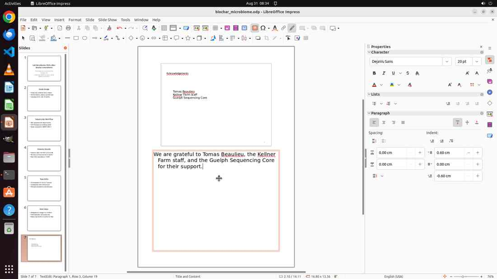
step 42 00:34:41
THINKINGSlide 7 note added. Now I'll move to slide 6 and add a note. I'll click slide 6's thumbnail in the panel, which will switch the Notes view to slide 6. Then double-click the notes area and type.
Let me click slide 6 thumbnail, then double-click the notes area, then type. I can batch: click slide 6, double-click notes, type. But the notes area position is the same. After clicking the thumbnail, the notes view updates. Let me batch these.
ACTIONSlide 7 note added. Now let me switch to slide 6 and add its note.
EXECUTED (pyautogui in VM)pyautogui.click(167, 843)
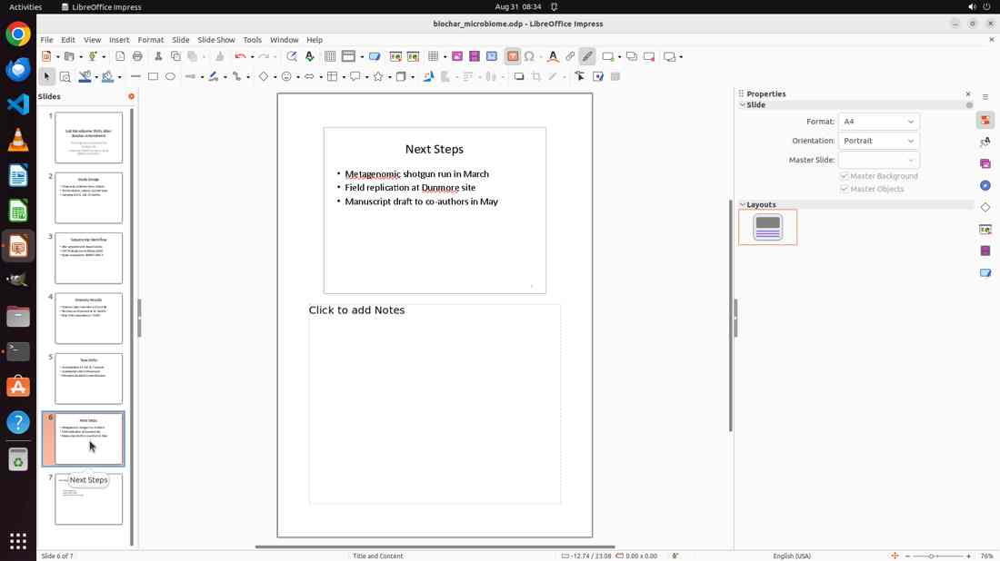
step 43 00:34:54
THINKINGNow on slide 6 (Next Steps) with empty notes. I'll double-click the notes area and type a note. Let me batch: double-click notes area, then type.
EXECUTED (pyautogui in VM)pyautogui.doubleClick(830, 674)
step 44 00:35:09
THINKINGThe frame is selected but status shows "Text Frame 'Click to...' selected" — the double-click selected it but I need to be in text edit mode. The status bar says "selected" not "TextEdit". My double-click may have only selected the frame. Let me double-click again to enter text edit mode, or just start typing which usually enters edit mode. Actually, in Impress, double-clicking an empty notes placeholder should enter edit mode. The status shows "selected" — it seems the first click selected, second click... Let me double-click once more on the area to be sure it's in edit mode, then type.
Actually to be safe, let me just type — if the frame is selected, typing should enter text. But safer to double-click again. Let me double-click then type in one batch.
ACTIONLet me enter edit mode and type the note for slide 6.
EXECUTED (pyautogui in VM)pyautogui.doubleClick(830, 674)
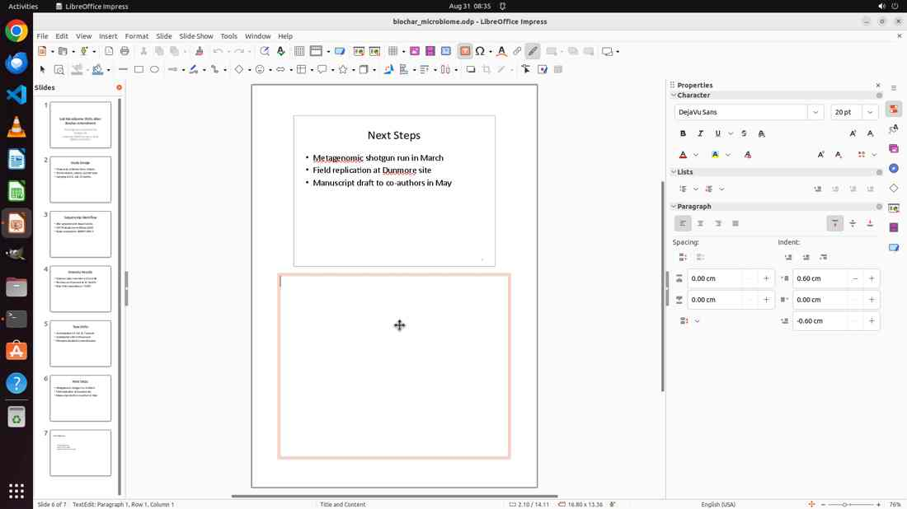
step 45 00:35:19
THINKINGNow in text edit mode (status: TextEdit Paragraph 1, Row 1, Column 1). Let me type the note for slide 6 (Next Steps).
ACTIONNow in edit mode. Let me type the note for slide 6.
TOOL CALL<tool_call>
<function=computer_use>
<parameter=action>
type
</parameter>
<parameter=text>
Our next phase adds a metagenomic shotgun run, replicates the design at Dunmore, and moves toward the manuscript.
</parameter>
</function>
</tool_call>
EXECUTED (pyautogui in VM)pyautogui.typewrite("Our next phase adds a metagenomic shotgun run, replicates the design at Dunmore, and moves toward the manuscript.")
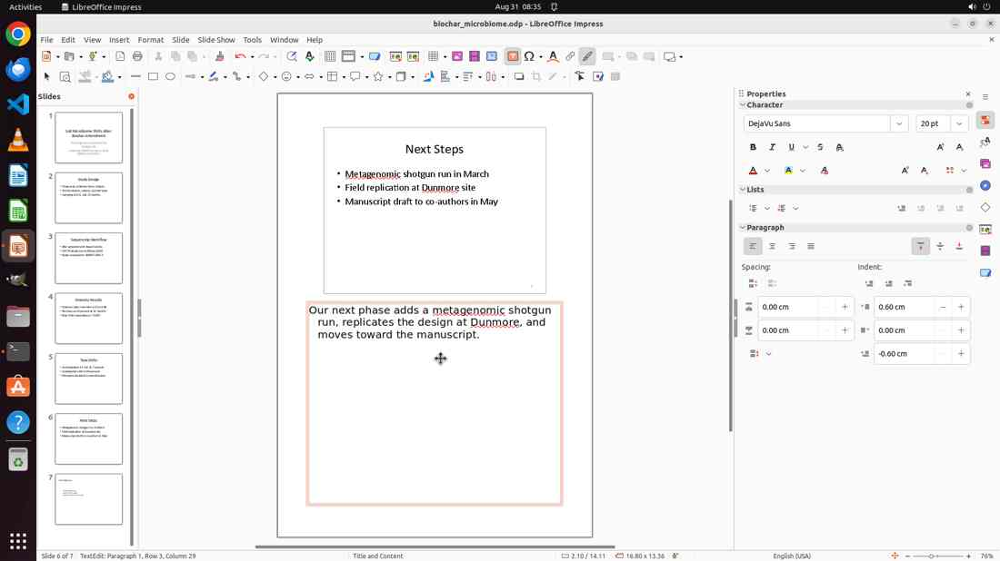
step 46 00:35:31
THINKINGSlide 6 note done. Now slide 5. I learned the pattern: click thumbnail, then double-click the notes area twice (first selects frame, second enters edit). Actually for slide 6, the first double-click selected and the second double-click entered edit mode. To be efficient, I'll click the thumbnail, then double-click the notes area twice, then type. But the first double-click might already enter edit mode if clicked on the frame. It varied. To be safe, I'll do: click thumbnail, double-click notes, double-click notes, type. Batching this is fine since outcomes are predictable.
Let me do slide 5.
ACTIONSlide 6 note done. Now let me do slide 5: select it, enter notes edit mode, and type.
EXECUTED (pyautogui in VM)pyautogui.doubleClick(830, 674)
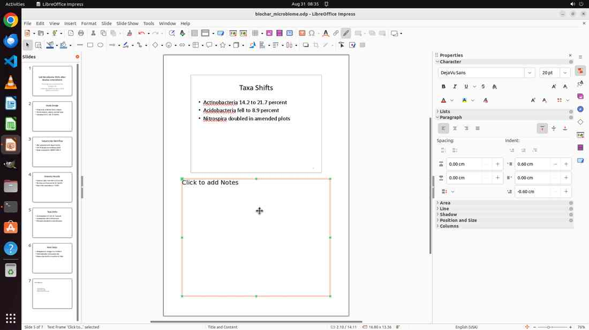
step 47.2 00:35:46
same model call as the previous action
EXECUTED (pyautogui in VM)pyautogui.doubleClick(830, 674)
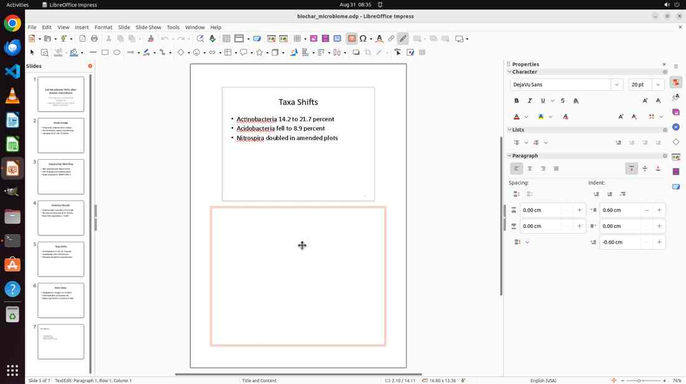
step 48 00:35:57
THINKINGIn edit mode for slide 5 (TextEdit Row 1, Column 1). The double-double-click pattern works reliably. Let me type the note for slide 5.
ACTIONIn edit mode. Let me type the note for slide 5.
TOOL CALL<tool_call>
<function=computer_use>
<parameter=action>
type
</parameter>
<parameter=text>
Biochar shifted community composition, reducing Actinobacteria and Acidobacteria while doubling Nitrospira.
</parameter>
</function>
</tool_call>
EXECUTED (pyautogui in VM)pyautogui.typewrite("Biochar shifted community composition, reducing Actinobacteria and Acidobacteria while doubling Nitrospira.")
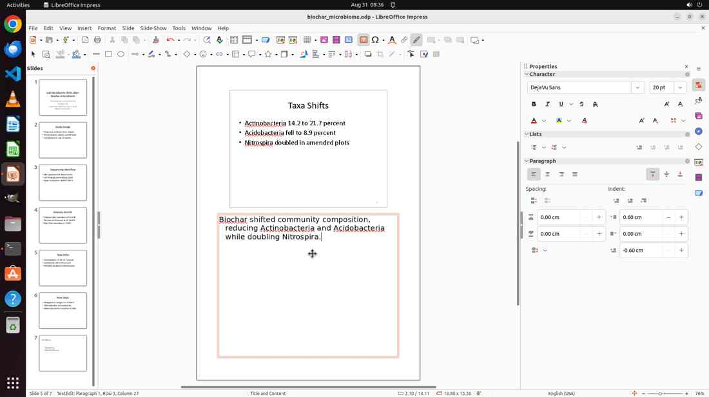
step 49.1 00:36:12
THINKINGSlide 5 note done. Now slide 4. Click thumbnail 4, then double-click notes twice, then type.
EXECUTED (pyautogui in VM)pyautogui.click(167, 611)
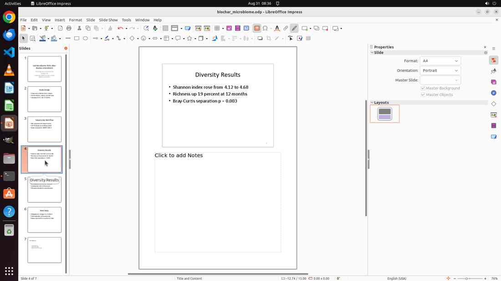
step 49.2 00:36:15
same model call as the previous action
EXECUTED (pyautogui in VM)pyautogui.doubleClick(830, 674)
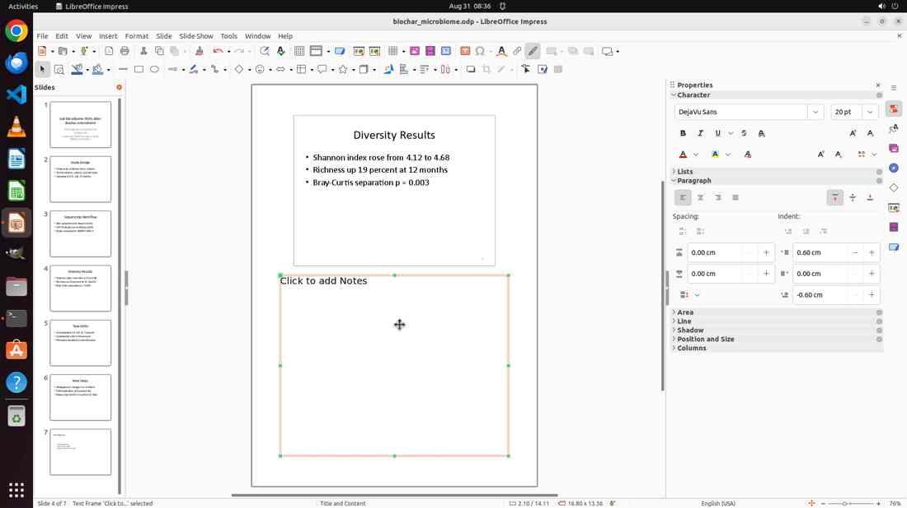
step 49.3 00:36:19
same model call as the previous action
EXECUTED (pyautogui in VM)pyautogui.doubleClick(830, 674)
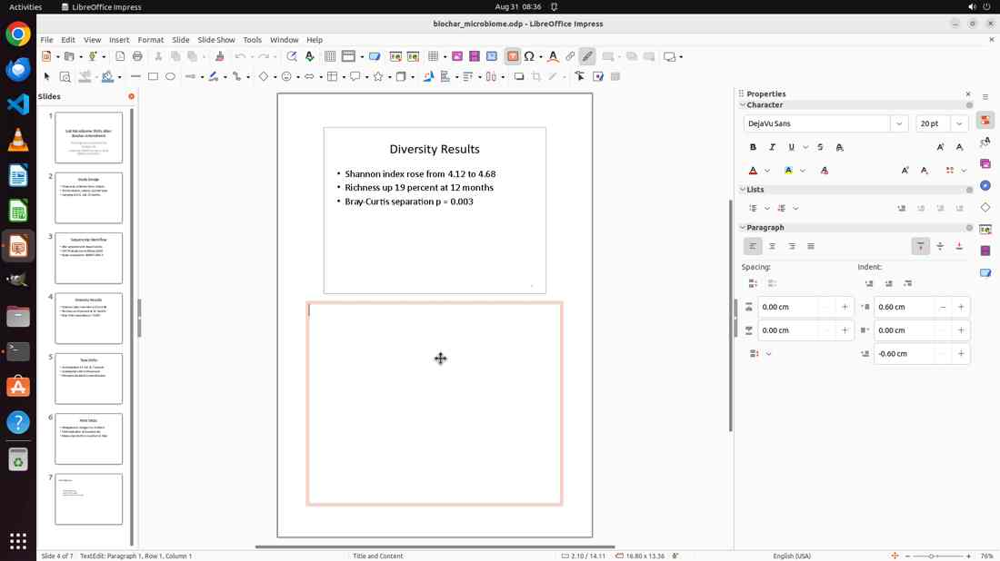
step 50 00:36:29
THINKINGOn slide 4 (Diversity Results), in edit mode (TextEdit Row 1, Column 1). Let me type the note.
ACTIONIn edit mode on slide 4. Let me type its note.
TOOL CALL<tool_call>
<function=computer_use>
<parameter=action>
type
</parameter>
<parameter=text>
Diversity metrics improved over the year, with the Shannon index rising and communities separating significantly between treatments.
</parameter>
</function>
</tool_call>
EXECUTED (pyautogui in VM)pyautogui.typewrite("Diversity metrics improved over the year, with the Shannon index rising and communities separating significantly between treatments.")